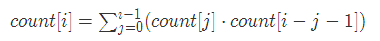

Binary Search - 二分查找
题解
对于已排序升序(升序)数组，使用二分查找可满足复杂度要求，注意数组中可能有重复值，所以需要使用类似lower_bound中提到的方法。
Java
class Solution {
/**
* @param nums: The integer array.
* @param target: Target to find.
* @return: The first position of target. Position starts from 0.
*/
public int binarySearch(int[] nums, int target) {
if (nums == null || nums.length == 0) {
return -1;
}
int start = -1, end = nums.length;
int mid;
while (start + 1 < end) {
// avoid overflow when (end + start)
mid = start + (end - start) / 2;
if (nums[mid] < target) {
start = mid;
} else {
end = mid;
}
}
if (end == nums.length || nums[end] != target) {
return -1;
} else {
return end;
}
}
}
源码分析
- 首先对输入做异常处理，数组为空或者长度为0。
- 初始化 start, end, mid三个变量，这里start初始化为-1主要是考虑到end为1。注意mid的求值方法，可以防止两个整型值相加时溢出。
- 使用迭代而不是递归进行二分查找，因为工程中递归写法存在潜在溢出的可能。
- while终止条件应为start + 1 < end而不是start <= end，start == end时可能出现死循环。即循环终止条件是相邻或相交元素时退出。由于这里初始化时start < end，所以一定是start + 1 == end时退出循环。
- 迭代终止时有两种情况，一种是在原数组中找到了，这种情况下一定是end, 因为start的更新只在nums[mid] < target.
- 最后判断end和target的关系，先排除end为数组长度这种会引起越界的情况，然后再判断和目标值是否相等。
复杂度分析
时间复杂度 O(logn)O(\log n)O(logn), 空间复杂度 (1)(1)(1).
对于题中的 follow up, Java 中数组不允许使用 long 型，如果使用 long 型，那么数组大小可大 17GB 之巨！！几乎没法用。
Search Insert Position
Problem Statement
Given a sorted array and a target value, return the index if the target is
found. If not, return the index where it would be if it were inserted in
order.
You may assume NO duplicates in the array.
Example
[1,3,5,6], 5 → 2
[1,3,5,6], 2 → 1
[1,3,5,6], 7 → 4
[1,3,5,6], 0 → 0
Challenge
O(log(n)) time
题解
Python
问题可以转化为， 寻找first position that value is >= target。如果没找到， 那么就插入在list的尾部。
class Solution:
"""
@param A : a list of integers
@param target : an integer to be inserted
@return : an integer
"""
def searchInsert(self, A, target):
if not A:
return 0
st, ed = 0, len(A) - 1
while st + 1 < ed:
mid = (st + ed) / 2
if A[mid] == target:
ed = mid
elif A[mid] < target:
st = mid
else:
ed = mid
if A[st] >= target:
return st
elif A[ed] >= target:
return ed
else:
return len(A)
源码分析
分析三种典型情况：
- 目标值在数组范围之内，最后返回值一定是start + 1
- 目标值比数组最小值还小，此时start 一直为-1, 故最后返回start + 1 也没错，也可以将-1 理解为数组前一个更小的值
- 目标值大于等于数组最后一个值，由于循环退出条件为start + 1 == end, 那么循环退出时一定有start = A.length - 1, 应该返回start + 1
综上所述，返回start + 1是非常优雅的实现。其实以上三种情况都可以统一为一种方式来理解，即索引-1 对应于在数组前方插入一个非常小的数，索引end 即对应数组后方插入一个非常大的数，那么要插入的数就一定在start 和end 之间了。
有时复杂的边界条件处理可以通过『补项』这种优雅的方式巧妙处理。
复杂度分析
时间复杂度 O(logn)O(\log n)O(logn), 空间复杂度 O(1)O(1)O(1).
Search for a Range
Given a sorted array of n integers, find the starting and ending position of
a given target value.
If the target is not found in the array, return [-1, -1].
Example
Given [5, 7, 7, 8, 8, 10] and target value 8, return [3, 4].
Challenge
O(log n) time.
题解
Python
first/last position 结合。
class Solution:
"""
@param A : a list of integers
@param target : an integer to be searched
@return : a list of length 2, [index1, index2]
"""
def searchRange(self, A, target):
ret = [-1, -1]
if not A:
return ret
# find the first position of target
st, ed = 0, len(A) - 1 //二分法核心
while st + 1 < ed:
mid = (st + ed) / 2
if A[mid] == target:
ed = mid
elif A[mid] < target:
st = mid
else:
ed = mid
if A[st] == target:
ret[0] = st
elif A[ed] == target:
ret[0] = ed
# find the last position of target
st, ed = 0, len(A) - 1
while st + 1 < ed:
mid = (st + ed) / 2
if A[mid] == target:
st = mid
elif A[mid] < target:
st = mid
else:
ed = mid
if A[ed] == target:
ret[1] = ed
elif A[st] == target:
ret[1] = st
return ret
Search a 2D Matrix
Problem Statement
Write an efficient algorithm that searches for a value in an m x n matrix.
This matrix has the following properties:
- Integers in each row are sorted from left to right.
- The first integer of each row is greater than the last integer of the previous row.
Example
Consider the following matrix:
[
[1, 3, 5, 7],
[10, 11, 16, 20],
[23, 30, 34, 50]
]
Given target = 3, return true.
Challenge
O(log(n) + log(m)) time
题解 - 一次二分搜索 V.S. 两次二分搜索
- 一次二分搜索 - 由于矩阵按升序排列，因此可将二维矩阵转换为一维问题。对原始的二分搜索进行适当改变即可(求行和列)。时间复杂度为 O(log(mn))=O(log(m)+log(n))O(log(mn))=O(log(m)+log(n))O(log(mn))=O(log(m)+log(n))
- 两次二分搜索 - 先按行再按列进行搜索，即两次二分搜索。时间复杂度相同。
一次二分搜索
Python
class Solution:
def search_matrix(self, matrix, target):
# Find the first position of target
if not matrix or not matrix[0]:
return False
m, n = len(matrix), len(matrix[0])
st, ed = 0, m * n - 1
while st + 1 < ed:
mid = (st + ed) / 2
if matrix[mid / n][mid % n] == target:
return True
elif matrix[mid / n][mid % n] < target:
st = mid
else:
ed = mid
return matrix[st / n][st % n] == target or \
matrix[ed / n][ed % n] == target
两次二分法
Python
class Solution:
def search_matrix(self, matrix, target):
if not matrix or not matrix[0]:
return False
# first pos >= target
st, ed = 0, len(matrix) - 1
while st + 1 < ed:
mid = (st + ed) / 2
if matrix[mid][-1] == target:
st = mid
elif matrix[mid][-1] < target:
st = mid
else:
ed = mid
if matrix[st][-1] >= target:
row = matrix[st]
elif matrix[ed][-1] >= target:
row = matrix[ed]
else:
return False
# binary search in row
st, ed = 0, len(row) - 1
while st + 1 < ed:
mid = (st + ed) / 2
if row[mid] == target:
return True
elif row[mid] < target:
st = mid
else:
ed = mid
return row[st] == target or row[ed] == target
Math and Bit Manipulation
- 数学和位运算（一）
Question
Given 2*n + 1 numbers, every numbers occurs twice except one, find it.
Example
Given [1,2,2,1,3,4,3], return 4
Challenge
One-pass, constant extra space
题解
根据题意，共有2*n + 1个数，且有且仅有一个数落单，要找出相应的「单数」。鉴于有空间复杂度的要求，不可能使用另外一个数组来保存每个数出现的次数，考虑到异或运算的特性，根据x ^ x = 0和x ^ 0 = x可将给定数组的所有数依次异或，最后保留的即为结果。
C++
class Solution {
public:
/**
* @param A: Array of integers.
* return: The single number.
*/
int singleNumber(vector<int> &A) {
if (A.empty()) {
return -1;
}
int result = 0;
for (vector<int>::iterator iter = A.begin(); iter != A.end(); ++iter) {
result = result ^ *iter;
}
return result;
}
};
源码分析
- 异常处理(OJ上对于空vector的期望结果为0，但个人认为-1更为合理)
- 初始化返回结果result为0，因为x ^ 0 = x
Single Number II
Question
Problem Statement
Given 3*n + 1 numbers, every numbers occurs triple times except one, find
it.
Example
Given [1,1,2,3,3,3,2,2,4,1] return 4
Challenge
One-pass, constant extra space.
题解1 - 逐位处理
上题 Single Number 用到了二进制中异或的运算特性，这题给出的元素数目为3*n + 1，因此我们很自然地想到如果有种运算能满足「三三运算」为0该有多好！对于三个相同的数来说，其相加的和必然是3的倍数，仅仅使用这一个特性还不足以将单数找出来，我们再来挖掘隐含的信息。以3为例，若使用不进位加法，三个3相加的结果为：
注意到其中的奥义了么？三个相同的数相加，不仅其和能被3整除，其二进制位上的每一位也能被3整除！因此我们只需要一个和int类型相同大小的数组记录每一位累加的结果即可。时间复杂度约为 O((3n+1)⋅sizeof(int)⋅8)O((3n+1)\cdot sizeof(int) \cdot 8)O((3n+1)⋅sizeof(int)⋅8)
Python
class Solution(object):
def singleNumber(self, nums):
"""
:type nums: List[int]
:rtype: int
"""
if nums is None:
return 0
result = 0
for i in xrange(32):
bit_i_sum = 0
for num in nums:
bit_i_sum += ((num >> i) & 1)
result |= ((bit_i_sum % 3) << i)
return self.twos_comp(result, 32)
def twos_comp(self, val, bits):
"""
compute the 2's compliment of int value val
e.g. -4 ==> 11100 == -(10000) + 01100
"""
return -(val & (1 << (bits - 1))) | (val & ((1 << (bits - 1)) - 1))
Single Number III
Given 2*n + 2 numbers, every numbers occurs twice except two, find them.
Example
Given [1,2,2,3,4,4,5,3] return 1 and 5
Challenge
O(n) time, O(1) extra space.
O(1) Check Power of 2
Using O(1) time to check whether an integer n is a power of 2.
Example
For n=4, return true;
For n=5, return false;
Challenge
O(1) time
简单点来考虑可以连除2求余，看最后的余数是否为1，但是这种方法无法在 O(1)O(1)O(1) 的时间内解出，所以我们必须要想点别的办法了。2的整数幂若用二进制来表示，则其中必只有一个1，其余全是0，那么怎么才能用一个式子把这种特殊的关系表示出来了？传统的位运算如按位与、按位或和按位异或等均无法直接求解，我就不卖关子了，比较下x - 1和x的关系试试？以x=4为例。
两个数进行按位与就为0了！如果不是2的整数幂则无上述关系，反证法可证之。
Convert Integer A to Integer B
Factorial Trailing Zeroes
Write an algorithm which computes the number of trailing zeros in n factorial.
Example
11! = 39916800, so the out should be 2
Challenge
O(log N) time
找阶乘数中末尾的连零数量，容易想到的是找相乘能为10的整数倍的数，如 2×52 \times 52×5, 1×101 \times 101×10 等，遥想当初做阿里笔试题时遇到过类似的题，当时想着算算5和10的个数就好了，可万万没想到啊，25可以变为两个5相乘！真是蠢死了... 根据数论里面的知识，任何正整数都可以表示为它的质因数的乘积[^wikipedia]。所以比较准确的思路应该是计算质因数5和2的个数，取小的即可。质因数2的个数显然要大于5的个数，故只需要计算给定阶乘数中质因数中5的个数即可。原题的问题即转化为求阶乘数中质因数5的个数，首先可以试着分析下100以内的数，再试试100以上的数，聪明的你一定想到了可以使用求余求模等方法 :)
Python
class Solution:
# @param {integer} n
# @return {integer}
def trailingZeroes(self, n):
if n < 0:
return -1
count = 0
while n > 0:
n /= 5
count += n
return count
题解2 - Recursive
可以使用迭代处理的程序往往用递归，而且往往更为优雅。递归的终止条件为n <= 0.
Python
class Solution:
# @param {integer} n
# @return {integer}
def trailingZeroes(self, n):
if n == 0:
return 0
elif n < 0:
return -1
else:
return n / 5 + self.trailingZeroes(n / 5)
Unique Binary Search Trees
Given n, how many structurally unique BSTs (binary search trees)
that store values 1...n?
Example
Given n = 3, there are a total of 5 unique BST's.
1 3 3 2 1
\ / / / \ \
3 2 1 1 3 2
/ / \ \
2 1 2 3
题解1 - 两重循环
挺有意思的一道题，与数据结构和动态规划都有点关系。这两天在骑车路上和睡前都一直在想，始终未能找到非常明朗的突破口，直到看到这么一句话——『以i为根节点的树，其左子树由[0, i-1]构成， 其右子树由[i+1, n]构成。』这不就是 BST 的定义嘛！灵活运用下就能找到递推关系了。
容易想到这道题的动态规划状态为 count[n], count[n] 表示到正整数 i 为止的二叉搜索树个数。容易得到 count[1] = 1, 根节点为1，count[2] = 2, 根节点可为1或者2。那么 count[3] 的根节点自然可为1，2，3. 如果以1为根节点，那么根据 BST 的定义，2和3只可能位于根节点1的右边；如果以2为根节点，则1位于左子树，3位于右子树；如果以3为根节点，则1和2必位于3的左子树。
抽象一下，如果以 i 作为根节点，由基本的排列组合知识可知，其唯一 BST 个数为左子树的 BST 个数乘上右子树的 BST 个数。故对于 i 来说，其左子树由[0, i - 1]构成，唯一的 BST 个数为 count[i - 1], 右子树由[i + 1, n] 构成，其唯一的 BST 个数没有左子树直观，但是也有迹可循。对于两组有序数列「1, 2, 3] 和 [4, 5, 6]来说，这两个有序数列分别组成的 BST 个数必然是一样的，因为 BST 的个数只与有序序列的大小有关，而与具体值没有关系。所以右子树的 BST 个数为 count[n - i]，于是乎就得到了如下递推关系：

网上有很多用 count[3] 的例子来得到递推关系，恕本人愚笨，在没有从 BST 的定义和有序序列个数与 BST 关系分析的基础上，我是不敢轻易说就能得到如上状态转移关系的。
Python
class Solution:
# @paramn n: An integer
# @return: An integer
def numTrees(self, n):
if n < 0:
return -1
count = [0] * (n + 1)
count[0] = 1
for i in xrange(1, n + 1):
for j in xrange(i):
count[i] += count[j] * count[i - j - 1]
return count[n]
Update Bits
Hash Function
Question
Question
Problem Statement
In data structure Hash, hash function is used to convert a string(or any other
type) into an integer smaller than hash size and bigger or equal to zero. The
objective of designing a hash function is to "hash" the key as unreasonable as
possible. A good hash function can avoid collision as less as possible. A
widely used hash function algorithm is using a magic number 33, consider any
string as a 33 based big integer like follow:
hashcode("abcd") = (ascii(a) 33333^3333 + ascii(b) 33233^2332 + ascii(c) *33 +
ascii(d)) % HASH_SIZE
= (97 33333^3333 + 98 33233^2332 + 99 * 33 +100) % HASH_SIZE
= 3595978 % HASH_SIZE
here HASH_SIZE is the capacity of the hash table (you can assume a hash table
is like an array with index 0 ~ HASH_SIZE-1).
Given a string as a key and the size of hash table, return the hash value of
this key.f
Example
For key="abcd" and size=100, return 78
Clarification
For this problem, you are not necessary to design your own hash algorithm or
consider any collision issue, you just need to implement the algorithm as
described.
题解1
基本实现题，大多数人看到题目的直觉是按照定义来递推不就得了嘛，但其实这里面大有玄机，因为在字符串较长时使用 long 型来计算33的幂会溢出！所以这道题的关键在于如何处理大整数溢出。对于整数求模，(a * b) % m = a % m * b % m 这个基本公式务必牢记。根据这个公式我们可以大大降低时间复杂度和规避溢出。
Count 1 in Binary
Count how many 1 in binary representation of a 32-bit integer.
Example
Given 32, return 1
Given 5, return 2
Given 1023, return 9
Challenge
If the integer is n bits with m 1 bits. Can you do it in O(m) time?
C++
class Solution {
public:
/**
* @param num: an integer
* @return: an integer, the number of ones in num
*/
int countOnes(int num) {
int count=0;
while (num) {
num &= num-1;
count++;
}
return count;
}
};
Fibonacci
题解
斐波那契数列使用递归极其容易实现，其实使用非递归的方法也很容易，不断向前滚动即可。
C++
class Solution{
public:
/**
* @param n: an integer
* @return an integer f(n)
*/
int fibonacci(int n) {
if (n <= 0) return -1;
if (n == 1) return 0;
if (n == 2) return 1;
int fn = 0, fn1 = 0, fn2 = 1;
for (int i = 3; i <= n; i++) {
fn = fn1 + fn2;
fn1 = fn2;
fn2 = fn;
}
return fn;
}
};
A plus B Problem
Write a function that add two numbers A and B.
You should not use + or any arithmetic operators.
Example
Given a=1 and b=2 return 3
题解
不用加减法实现加法，类似数字电路中的全加器，异或求得部分和，相与求得进位，最后将进位作为加法器的输入，典型的递归实现思路。
Java
class Solution {
/*
* param a: The first integer
* param b: The second integer
* return: The sum of a and b
*/
public int aplusb(int a, int b) {
int result = a ^ b;
int carry = a & b;
carry <<= 1;
if (carry != 0) {
result = aplusb(result, carry);
}
return result;
}
}
Print Numbers by Recursion
题解
从小至大打印 N 位的数列，正如题目中所提供的 recursion(i), 解法简单粗暴，但问题在于 N 稍微大一点时栈就溢出了，因为递归深度太深了。能联想到的方法大概有两种，一种是用排列组合的思想去解释，把0~9当成十个不同的数(字符串表示)，塞到 N 个坑位中，这个用 DFS 来解应该是可行的；另一个则是使用数学方法，依次递归递推，比如 N=2 可由 N=1递归而来，具体方法则是乘10进位加法。题中明确要求递归深度最大不超过 N, 故 DFS 方法比较危险。
Majority Number
题解
找出现次数超过一半的数，使用哈希表统计不同数字出现的次数，超过二分之一即返回当前数字。这种方法非常简单且容易实现，但会占据过多空间，注意到题中明确表明要找的数会超过二分之一，这里的隐含条件不是那么容易应用。既然某个数超过二分之一，那么用这个数和其他数进行 PK，不同的计数器都减一（核心在于两两抵消），相同的则加1，最后返回计数器大于0的即可。综上，我们需要一辅助数据结构如pair<int, int>.
C++
int majorityNumber(vector<int> nums) {
if (nums.empty()) return -1;
int k = -1, count = 0;
for (auto n : nums) {
if (!count) k = n;
if (k == n) count++;
else count--;
}
return k;
}
Majority Number II
题解
题 Majority Number 的升级版，之前那道题是『两两抵消』，这道题自然则需要『三三抵消』，不过『三三抵消』需要注意不少细节，比如两个不同数的添加顺序和添加条件。 C++
class Solution {
public:
/**
* @param nums: A list of integers
* @return: The majority number occurs more than 1/3.
*/
int majorityNumber(vector<int> nums) {
if (nums.empty()) return -1;
int k1 = 0, k2 = 0, c1 = 0, c2 = 0;
for (auto n : nums) {
if (!c1 || k1 == n) {
k1 = n;
c1++;
} else if (!c2 || k2 == n) {
k2 = n;
c2++;
} else {
c1--;
c2--;
}
}
c1 = 0;
c2 = 0;
for (auto n : nums) {
if (n == k1) c1++;
if (n == k2) c2++;
}
return c1 > c2 ? k1 : k2;
}
};
Majority Number III
题解
Majority Number II 的升级版，有了前两道题的铺垫，此题的思路已十分明了，对 K-1个数进行相互抵消，这里不太可能使用 key1, key2...等变量，用数组使用上不太方便，且增删效率不高，故使用哈希表较为合适，当哈希表的键值数等于 K 时即进行清理，当然更准备地来讲应该是等于 K-1时清理。故此题的逻辑即为：1. 更新哈希表，若遇哈希表 size == K 时则执行删除操作，最后遍历哈希表取真实计数器值，返回最大的 key. C++
class Solution {
public:
/**
* @param nums: A list of integers
* @param k: As described
* @return: The majority number
*/
int majorityNumber(vector<int> nums, int k) {
unordered_map<int, int> map;
for (auto n : nums) {
if (map.size() < k) map[n]++;
else {
if (map.count(n)) map[n]++;
else {
map[n] = 1;
vector<int> keys;
for (auto &it : map) {
it.second--;
if (!it.second) keys.push_back(it.first);
}
for (int i : keys) map.erase(i);
}
}
}
int mx = 0;
int ret = 0;
for (auto &it : map) {
if (it.second > mx) {
ret = it.first;
mx = it.second;
}
}
return ret;
}
};
Digit Counts
Question
Count the number of k's between 0 and n. k can be 0 - 9.
Example
if n=12, k=1 in [0, 1, 2, 3, 4, 5, 6, 7, 8, 9, 10, 11, 12],
we have FIVE 1's (1, 10, 11, 12)
题解
leetcode 上的有点简单，这里以 Lintcode 上的为例进行说明。找出从0至整数 n 中出现数位k的个数，与整数有关的题大家可能比较容易想到求模求余等方法，但其实很多与整数有关的题使用字符串的解法更为便利。将整数 i 分解为字符串，然后遍历之，自增 k 出现的次数即可。
C++
class Solution {
public:
/*
* param k : As description.
* param n : As description.
* return: How many k's between 0 and n.
*/
int digitCounts(int k, int n) {
char c = k + '0';
int count = 0;
for (int i = k; i <= n; i++) {
for (auto s : to_string(i)) {
if (s == c) count++;
}
}
return count;
}
};
Ugly Number
Ugly number is a number that only have factors 3, 5 and 7.
Design an algorithm to find the Kth ugly number.
The first 5 ugly numbers are 3, 5, 7, 9, 15 ...
Example
If K=4, return 9.
Challenge
O(K log K) or O(K) time.
题解1 - TLE
Lintcode 和 Leetcode 中质数稍微有点区别，这里以 Lintcode 上的版本为例进行说明。寻找第 K 个丑数，丑数在这里的定义是仅能被3，5，7整除。简单粗暴的方法就是挨个检查正整数，数到第 K 个丑数时即停止。
题解2 - 二分查找
根据丑数的定义，它的质因数只含有3, 5, 7, 那么根据这一点其实可以知道后面的丑数一定可以从前面的丑数乘3,5,7得到。那么可不可以将其递推关系用数学公式表示出来呢？
我大概做了下尝试，首先根据丑数的定义可以写成 Uk=3x3⋅5x5⋅7x7U_k = 3^{x_3} \cdot 5^{x_5} \cdot 7^{x_7}Uk=3x3⋅5x5⋅7x7, 那么 Uk+1U_{k+1}Uk+1 和 UkU_kUk 的不同则在于 x3,x5,x7x_3, x_5, x_7x3,x5,x7 的不同，递推关系为 Uk+1=Uk⋅3y3⋅5y5⋅7y73z3⋅5z5⋅7z7U_{k+1} = U_k \cdot \frac{3^{y_3} \cdot 5^{y_5} \cdot 7^{y_7}}{3^{z_3} \cdot 5^{z_5} \cdot 7^{z_7}}Uk+1=Uk⋅3z3⋅5z5⋅7z73y3⋅5y5⋅7y7,将这些分数按照从小到大的顺序排列可在 $$O(K)$$ 的时间内解决，但是问题来了，得到这些具体的 y,zy, zy,z 就需要费不少时间，且人工操作极易漏解。:( 所以这种解法只具有数学意义，没有想到好的实现方法。
除了这种找相邻递推关系的方法我们还可以尝试对前面的丑数依次乘3, 5, 7，直至找到比当前最大的丑数大的一个数，对乘积后的三种不同结果取最小值即可得下一个最大的丑数。这种方法需要保存之前的 N 个丑数，由于已按顺序排好，天然的二分法。
C++
class Solution {
public:
/*
* @param k: The number k.
* @return: The kth prime number as description.
*/
long long kthPrimeNumber(int k) {
if (k <= 0) return -1;
vector<long long> ugly(k + 1);
ugly[0] = 1;
int index = 0, index3 = 0, index5 = 0, index7 = 0;
while (index <= k) {
long long val = ugly[index3]*3 < ugly[index5]*5 ? ugly[index3]*3 : ugly[index5]*5;
val = val < ugly[index7]*7 ? val : ugly[index7]*7;
if (val == ugly[index3]*3) ++index3;
if (val == ugly[index5]*5) ++index5;
if (val == ugly[index7]*7) ++index7;
ugly[++index] = val;
}
return ugly[k];
}
};
题解3 - 动态规划
TBD
Plus One
Example
Given [1,2,3] which represents 123, return [1,2,4].
Given [9,9,9] which represents 999, return [1,0,0,0].
题解
又是一道两个整数按数位相加的题，自后往前累加，处理下进位即可。这道题中是加1，其实还可以扩展至加2，加3等。
C++
class Solution {
public:
/**
* @param digits a number represented as an array of digits
* @return the result
*/
vector<int> plusOne(vector<int>& digits) {
return plusN(digits, 1);
}
vector<int> plusN(vector<int>& digits, int n) {
vector<int> result;
int carry = n;
for (int i = digits.size() - 1; i >= 0; i--) {
result.insert(result.begin(), (digits[i] + carry) % 10);
carry = (digits[i] + carry) / 10;
}
if (carry) result.insert(result.begin(), carry);
return result;
}
};